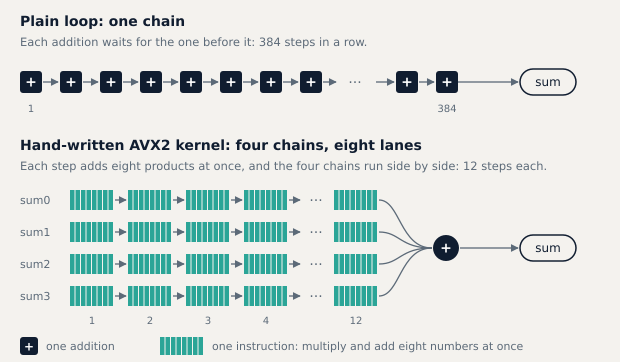
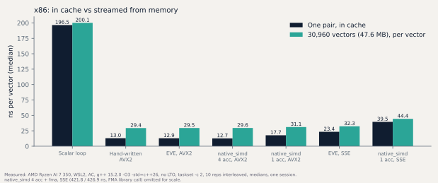
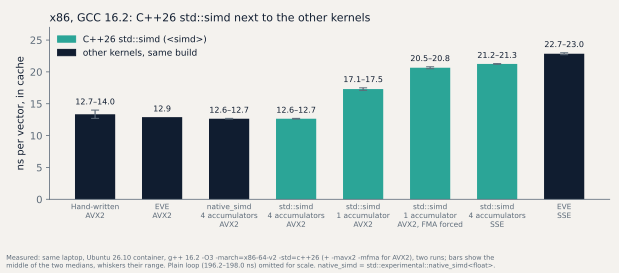
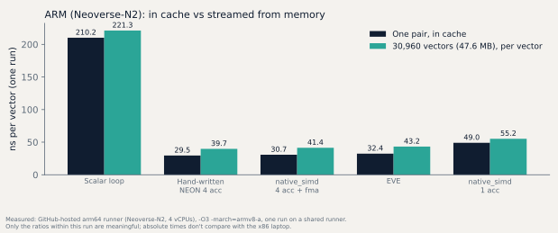

What SIMD buys a 384-float dot product
nesso, the log search tool I work on, turns every log line into a vector of 384 floats and ranks lines by how close their vectors are to the query's. Underneath that ranking sits one small function: the dot product of two arrays of 384 floats.
A hand-written AVX2 kernel makes it fifteen times faster than the plain loop. I wanted to know where that speed comes from, whether I need the intrinsics at all, and how much of it survives outside a benchmark. Four answers surprised me:
- Splitting one chain of additions into four was worth nearly as much as making the registers wider.
- Once the loop has that shape, portable code matches the intrinsics. EVE and
<experimental/simd>came within 3% on x86, and so does GCC 16's new C++26<simd>, though only on x86 for now. - GCC refuses to fuse a multiply and an add in one particular loop, on purpose. On my laptop it was right: forcing the fused instruction made that loop 19% slower.
- The kernel that is fifteen times faster in cache made a whole search 1.5% faster on one log, and nothing measurable on another.
One long chain
The plain version is the loop everyone writes:
float sum{};
for (size_t i = 0; i < a.size(); ++i)
sum += a[i] * b[i];
It takes 196.5 ns. In the released binary GCC 15 inlines it into the scoring function, vectorizes the multiplications four at a time, and then adds the four products to the running sum one by one:
movups (%r14,%rax,1),%xmm1
movups 0x0(%r13,%rax,1),%xmm5
add $0x10,%rax
mulps %xmm5,%xmm1 # four products at once
...
addss %xmm0,%xmm2 # then four additions, each waiting
addss %xmm3,%xmm2 # for the one before it
addss %xmm2,%xmm0
addss %xmm1,%xmm0
cmp %rdx,%rax
jne 25dd40
Inner loop of the official nesso 0.3.0 x86 binary, shuffles trimmed (full listing).
It can't do better, because float addition isn't associative: (a + b) + c and a + (b + c) can round differently. Without -ffast-math, or more precisely -fassociative-math, the compiler must keep the additions in source order. The products are independent, but all 384 additions form a single chain, each waiting for the one before. At about half a nanosecond per element, the timing fits that picture. In an earlier test, Clang 19 didn't do better: with the same flags it kept the whole loop scalar.
Asking for vectorization doesn't lift the rule. std::transform_reduce(std::execution::unseq, ...) is allowed to regroup the sum, but libstdc++ passes that permission to GCC as an OpenMP simd reduction pragma, which GCC ignores unless the code is built with -fopenmp or -fopenmp-simd. A hand-written #pragma omp simd reduction(+:sum) behaves the same way, and a plain #pragma omp simd without the reduction clause keeps the additions in order even with OpenMP enabled.
Four chains, eight lanes
Since 0.3.0, nesso ships a hand-written AVX2 kernel next to the plain loop. It keeps four 8-wide accumulators and uses fused multiply-add:
for (; i + 32 <= a.size(); i += 32) {
sum0 = _mm256_fmadd_ps(_mm256_loadu_ps(a + i), _mm256_loadu_ps(b + i), sum0);
sum1 = _mm256_fmadd_ps(_mm256_loadu_ps(a + i + 8), _mm256_loadu_ps(b + i + 8), sum1);
sum2 = _mm256_fmadd_ps(_mm256_loadu_ps(a + i + 16), _mm256_loadu_ps(b + i + 16), sum2);
sum3 = _mm256_fmadd_ps(_mm256_loadu_ps(a + i + 24), _mm256_loadu_ps(b + i + 24), sum3);
}
The released binary keeps that shape exactly, four vfmadd231ps into four ymm registers per iteration (listing). A 384-float vector takes 12 iterations with no scalar tail. The kernel lives in its own translation unit compiled with target("avx2,fma"), so the rest of the binary stays on the x86-64-v2 baseline, and the CPU is checked once at startup before this path is chosen.
It takes 13.0 ns, 15.1 times faster than the plain loop. Eight lanes alone can't explain fifteen times; the rest comes from running four independent chains instead of one. uops.info measures vfmadd231ps on Zen 5 at 4 cycles of latency through the accumulator, with two able to start per cycle, so on paper it would take eight chains to keep both units busy. I haven't measured an eight-accumulator version.

Adding in four groups changes the rounding, so the result differs from the plain loop in the last bits. That's acceptable only if it never changes a ranking. I'll come back to that.
The memory wall
Every number so far has both vectors sitting in L1 cache. A search doesn't work like that. It compares the query with every vector in the index, and those come from memory.
So I also timed one pass over 30,960 distinct vectors, about 47.6 MB, far more than the chip's caches hold. That's how many distinct vectors nesso keeps for the first 100,000 lines of BGL, a supercomputer log from the public Loghub collection, once it masks the parts of each line that change, such as IDs and numbers.

The plain loop barely notices: 200.1 ns per vector instead of 196.5. The AVX2 kernel goes from 13.0 to 29.4 ns, and the speedup drops from 15.1x to 6.8x. At 29.4 ns per 1,536-byte vector it reads about 52 GB/s, and it spends much of its time waiting for memory. Every AVX2 version in the chart, including the portable ones in the next section, lands within 2 ns of it.
Past this wall a faster loop doesn't help. Fewer bytes do: fp16 or bf16 vectors would halve the bytes per comparison and int8 would quarter them, and scoring several queries in one pass would share the reads.
You don't need the intrinsics
Intrinsics tie a kernel to one instruction set, and nesso's arm64 build still ships only the plain loop. So I wrote the same dot product with two portable libraries and built each twice, for the release baseline (-march=x86-64-v2, 128-bit SSE) and with -mavx2 -mfma. EVE (v2023.02.15) was used through eve::algo::transform_reduce with eve::fma. C++26 <simd> isn't in GCC 15, so the second library is std::experimental::native_simd<float> from <experimental/simd>, written first as the simplest loop: one accumulator and one reduction at the end. A native_simd<float> is a bundle of floats as wide as the target's SIMD registers, 4 with SSE or NEON and 8 with AVX2, so the same source compiles to either; C++26's std::simd is its standardized successor.
| x86 kernel, 384 floats | In cache | Streamed | Speedup |
|---|---|---|---|
| Plain loop | 196.5 ns | 200.1 ns | |
| Hand-written AVX2 + FMA | 13.0 ns | 29.4 ns | 15.1x / 6.8x |
| EVE, AVX2 | 12.9 ns | 29.5 ns | 15.2x / 6.8x |
native_simd, 4 accumulators + fma, AVX2 |
12.7 ns | 29.6 ns | 15.5x / 6.8x |
native_simd, 1 accumulator, AVX2 |
17.7 ns | 31.1 ns | 11.1x / 6.4x |
| EVE, SSE | 23.4 ns | 32.3 ns | 8.4x / 6.2x |
native_simd, 1 accumulator, SSE |
39.5 ns | 44.4 ns | 5.0x / 4.5x |
native_simd, 4 accumulators + fma, SSE |
421.8 ns | 426.9 ns | 0.47x / 0.47x |
EVE's AVX2 build matched my kernel, 12.9 against 13.0 ns. Its inner loop shows why: it keeps four accumulators and uses vfmadd231ps, the same plan I wrote by hand.
vmovaps 0x80(%r10),%ymm7
sub $0xffffffffffffff80,%r10
vfmadd231ps (%rcx),%ymm7,%ymm0
sub $0xffffffffffffff80,%rcx
vmovaps 0x20(%r10),%ymm7
vfmadd231ps -0x60(%rcx),%ymm7,%ymm5
vmovaps 0x40(%r10),%ymm7
vfmadd231ps -0x40(%rcx),%ymm7,%ymm3
vmovaps 0x60(%r10),%ymm7
vfmadd231ps -0x20(%rcx),%ymm7,%ymm6
cmp %rdx,%r10
jne 140
EVE, AVX2 build, full inner loop (listing).
To separate the library from the loop shape, I also wrote a native_simd version with four accumulators and an explicit std::experimental::fma. In the AVX2 build it compiles to the same four vfmadd231ps into four ymm registers (listing), and at 12.7 ns it was as fast as both. The library doesn't matter much; the shape of the loop does. C++26's <simd> (P1928) standardizes the vector types and their reductions within a register, but has nothing like EVE's transform_reduce over a range, so choosing the number of accumulators stays your job. The proposal to combine it with the parallel algorithms, P0350, isn't part of C++26.
The same table lets me compare the two ways of going faster. One chain over four SSE lanes is 5.0x faster than the plain loop, about what four lanes should give. Widening from SSE to AVX2 gained 1.8x with four chains (EVE, 8.4x to 15.2x) and 2.2x with one (native_simd, 39.5 to 17.7 ns). Going from one chain to four gained 1.4x at AVX2 width (native_simd, 17.7 to 12.7 ns), and 1.7x at SSE width, though that one compares EVE with native_simd, two libraries. So splitting the chain is worth a bit less than doubling the width, not a different order of magnitude. That's where the first finding comes from.
The last row is a trap. x86-64-v2 has no FMA instructions, and fma promises a single rounding, so the compiler can't split it into a multiply and an add. It calls a library routine for every lane, and the "fast" kernel ends up more than twice as slow as the plain loop. An explicit fma only pays off where the hardware has it.
Every kernel passed the same correctness check against the plain loop: 1,000 random vector pairs, limit 1e-3. The squared L2 distance, nesso's other kernel, has the same shape and behaved the same, 197.8 ns plain and 12.9 ns with AVX2, so I follow the dot product only.
The compiler knew better
One row bothered me. The one-accumulator native_simd was 36% slower than my kernel, which makes sense for a single chain. But GCC also didn't fuse it:
vmulps -0x20(%rdi,%rax,4),%ymm0,%ymm0
add $0x8,%rax
vaddps %ymm0,%ymm1,%ymm1 # one accumulator: each add waits for the last
native_simd, one accumulator, AVX2 build (listing).
The flags weren't the reason. The build is ISO C++26, where GCC defaults to -ffp-contract=fast. The same source became a fused fmla on ARM (listing), and the four-accumulator version fused on x86. On Compiler Explorer, adding -std=gnu++26 or an explicit -ffp-contract=fast left the loop unfused, while the scalar tail of the same function was fused into vfmadd231ss, which the tuning parameter below doesn't explain by itself; I didn't chase that.
The cause is a deliberate tuning choice. GCC's x86 tuning avoids creating chains of fused multiply-adds through a loop-carried accumulator: --param=avoid-fma-max-bits defaults to 256, and both the generic tuning and -mtune=znver5 keep the multiply and the add apart. The multiply then runs ahead, and only the add sits on the chain. Set the parameter to 0, or tune with -mtune=intel or -mtune=skylake, and the same code becomes vfmadd231ps (listings: split, fused). GCC 15.2 does the same with the parameter and with -mtune=intel.
So I forced it. The fused one-accumulator loop took 20.7 ns against 17.3 ns for the split one, 19% slower.
uops.info explains the direction. On Zen 5, vaddps on ymm registers has 2 cycles of latency and vfmadd231ps has 4 through the accumulator, so fusing doubles the latency of every step on the chain. The measured gap is smaller than a factor of two, and the clock shows why. At the roughly 4.9 GHz this core runs at, the split loop takes about 85 cycles per call and the fused one about 100, both below the 96 and 192 cycles a single chain of 48 steps would need on its own. Successive calls in the benchmark are independent, so they overlap in the out-of-order core, and the latency shows through only partly. FMA isn't automatically faster. On one chain, the compiler's split was the better code for this chip, and with four chains, where the latency is spread out, GCC does fuse.
C++26 <simd>, first look
GCC 16.2 ships the C++26 <simd> header, so I rebuilt the x86 kernels with it, in an Ubuntu 26.10 container on the same laptop, next to GCC 15.2 in a 26.04 container, with the same flags and no Conan. Each compiler ran the benchmark twice; the table gives the range of the two medians, in cache.

| Kernel, in cache (ns) | GCC 15.2 | GCC 16.2 |
|---|---|---|
| Plain loop | 196.0–196.3 | 196.2–198.0 |
| Hand-written AVX2 + FMA | 13.0–13.7 | 12.7–14.0 |
| EVE, AVX2 | 12.0–12.9 | 12.9 |
native_simd, 4 accumulators + fma, AVX2 |
12.2–13.7 | 12.6–12.7 |
<simd>, 4 accumulators, AVX2 |
n/a | 12.6–12.7 |
<simd>, 1 accumulator, AVX2 |
n/a | 17.1–17.5 |
<simd>, 1 accumulator, AVX2, FMA forced |
n/a | 20.5–20.8 |
<simd>, 4 accumulators, SSE |
n/a | 21.2–21.3 |
| EVE, SSE | 23.0–23.3 | 22.7–23.0 |
Most results repeated within 2% between runs, but the fastest kernels, at 12 to 14 ns, moved by up to 13%, so read the ranges rather than the digits. The four-accumulator <simd> kernel compiles to the same four vfmadd231ps as mine and runs as fast.
The compiler upgrade itself changed nothing: averaged over the two runs, every kernel built with both versions stayed within 4% in cache and 7% streamed, inside the run-to-run spread (the streamed times are in the published raw data).
This first release of the header has limits, all in libstdc++ 16 rather than in the standard:
- It's x86 only. The header is enabled behind
__SSE2__and stays off on aarch64. - It doesn't set
__cpp_lib_simd, the standard feature-test macro, only libstdc++'s own__glibcxx_simd. - Clang 23 leaves it disabled with libstdc++ 16: the header requires expansion statements (
__cpp_expansion_statements), which Clang 23 doesn't advertise. - There's no
std::simd::fmayet, so I wroteacc += a * band let the compiler fuse. Written that way, the SSE build becomesmulpsandaddps, and at 21.3 ns it is a little faster than EVE's. That isn't the new header beating the old one: the 421.8 ns row above comes from the explicitfma, and the one-accumulatornative_simd, written with*and+=, never had the problem.
The same picture on ARM
I ran the portable kernels on a GitHub-hosted arm64 runner (Neoverse-N2, 4 vCPUs) with -O3 -march=armv8-a, next to a hand-written NEON kernel with four float32x4_t accumulators and vfmaq_f32 (listing). Shared runners are noisy and their hardware varies, so only the ratios within that one run mean anything, and none of it compares with the laptop.
The plain loop in the official arm64 binary has the same single chain as on x86: one vector multiply, then four additions into one scalar accumulator (listing). The portable kernels compile unchanged. EVE and the four-accumulator native_simd both put four fmla into four accumulators (EVE, native_simd).

| ARM, one run on a shared runner | In cache | Streamed, per vector | Speedup over the plain loop |
|---|---|---|---|
| Plain loop | 210.2 ns | 221.3 ns | |
| Hand-written NEON, 4 accumulators | 29.5 ns | 39.7 ns | 7.1x / 5.6x |
native_simd, 4 accumulators + fma |
30.7 ns | 41.4 ns | 6.9x / 5.3x |
| EVE | 32.4 ns | 43.2 ns | 6.5x / 5.1x |
native_simd, 1 accumulator |
49.0 ns | 55.2 ns | 4.3x / 4.0x |
Same pattern at half the width. Here the portable versions trail the hand-written one by 4% and 10%; with one run on a shared machine I wouldn't read much into that, or into the absolute nanoseconds, which belong to whichever machine the runner happened to be. And on ARM, too, the plain loop leaves five to seven times on the table.
And in a whole search?
In the benchmark, the AVX2 kernel scans BGL's 30,960 vectors in 0.9 ms instead of 6.2; inside nesso's search that stage takes 1.6 ms instead of 6.7. To see what that's worth to a user, I timed whole searches with the official 0.3.0 binary: ten runs per kernel after three warm-ups, one thread, on BGL's first 100,000 lines and on HDFS, a far more repetitive Loghub log whose first million lines collapse to 34 distinct vectors.
| Whole search, median | Distance stage, plain / AVX2 | Search, plain / AVX2 |
|---|---|---|
| BGL, 100k lines, 30,960 vectors | 6.7 / 1.6 ms | 370.6 / 365.0 ms |
| HDFS, 1M lines, 34 vectors | 0.009 / 0.003 ms | 928.9 / 922.5 ms |
On BGL the faster kernel made the search 1.5% faster. On HDFS the difference is inside the noise: individual runs ranged from 897 to 984 ms. Nearly all the rest of each search is reading the index and loading the model, which the kernel doesn't touch. The output was byte-identical with either kernel.
This is Amdahl's law: speeding up one part of a task can save at most the share of time that part takes. On BGL it predicts the result almost exactly. With the plain loop the distance stage is 1.8% of the search; making that stage 4.2 times faster should bring 370.6 ms down to 365.5 ms, and I measured 365.0. Even an infinitely fast kernel could save at most that 1.8%.
So the kernel is fifteen times faster where it runs, and a small fraction of a real query. That's worth knowing before spending more effort on it.
Same answers either way
A faster kernel is only useful if it ranks lines the same way. Beyond the byte-identical output above, I compared the JSON output of searches with both kernels on an earlier build with the same kernels. On HDFS and BGL, the top 50 results came back in the same order, and raw similarity scores differed by at most 2.7e-7. CI fails if they ever differ by more than 1e-3.
My first comparison reported a difference of exactly zero, which is suspicious for two kernels that add in a different order. It turned out the default search mixes in a keyword score, and that was hiding the noise. In dense-only mode the expected rounding differences appeared.
That's why the plain loop stays in the binary. It's the reference every fast path is checked against.
What it buys
Split the chain before you widen it. Four accumulators were worth 1.4x to 1.7x, against 1.8x to 2.2x for AVX2's extra width. A SIMD kernel with one accumulator leaves a large part of its speed on the table.
Let the library write the loop. EVE and <experimental/simd> matched my intrinsics on x86 once the loop had the same shape, and they compile for ARM unchanged. C++26 <simd> should become the obvious choice once libstdc++ supports more than x86 and provides fma. Until then, avoid an unconditional fma on targets without the instruction.
Check the compiler before you overrule it. GCC's refusal to fuse looked like a missed optimization. It was a tuning decision, and on this chip it was the faster code.
Measure at every level. Fifteen times in cache became under seven from memory and 1.5% of a real search, as Amdahl's law said it would.
The kernel was the easy part. Knowing what it was worth took the rest of the measuring.
How I measured
All x86 numbers come from one laptop, an AMD Ryzen AI 7 350 under WSL2, plugged in, single thread, pinned to logical CPU 2. WSL doesn't expose clock speeds or core types, and its CPU numbers are virtual: Windows decides which physical core runs them. So afterwards I measured the clock directly, with a chain of dependent integer adds that take one cycle each. A single busy thread ran at 4.8 to 4.96 GHz on every one of the 16 virtual CPUs, a speed only the chip's Zen 5 cores reach, so the benchmarks ran on a Zen 5 core at about 4.9 GHz. The clock wasn't recorded during the sessions themselves; the stability check below is what shows it didn't drift. As a stability check, the plain loop was timed at the start, middle and end of the main session, and those medians stayed within 0.5% of each other.
Kernels ran in Google Benchmark with 10 repetitions in random interleaved order, and I report medians. "In cache" is one pair of vectors timed over and over; "streamed" is one pass over the 30,960 vectors, divided by their number. The main session used g++ 15.2.0 with -O3 -march=x86-64-v2 -std=c++26 and no LTO, plus -mavx2 -mfma for the AVX2 builds, on nesso 0.3.0 plus the benchmark. The GCC 16.2 comparison and the whole searches are later sessions on the same laptop and CPU. Whole searches and release assembly come from the official nesso_0.3.0_amd64.deb, run from the extracted package with its bundled model, with the queries instruction cache parity error on BGL and Got exception while serving block on HDFS in the default search mode.
The benchmark sources, container scripts for the GCC 15.2 and 16.2 builds, the whole-search script with every raw run, and all assembly listings are published next to this article, with the exact commands in bench/README.md. The listings from the main session are unedited objdump excerpts, with local build paths in their headers shortened; the gcc16-*.s files are the compiler's own -S output.